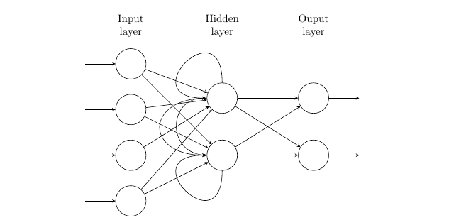

7 Sequence Models: RNNs and LSTMs
7.1 Sequence Models
Unlike models that work with inputs consisting of a single feature vector \(\mathbf{x}\in \mathbb{R}^d\), sequence models work with inputs that consist of an ordered list of feature vectors \(\mathbf{x}_1, ..., \mathbf{x}_m\) where each feature vector is now indexed by time or sequence step \(t\).
In the context of natural language processing, we often talk about language models. Specifically, the goal of language models is to compute the probability of sequence of \(m\) words, which is usually conditioned on a window of \(n\) previous words, as opposed to all previous words: \[ P(w_1, ..., w_m) = \prod_{i=1}^{i=m} P(w_i | w_1,...,w_{i-1}) \approx \prod_{i=1}^{i=m} P(w_i | w_{i-n},...,w_{i-1}) \]
7.1.1 n-gram Language Models
One way to compute the above probabilities is to compare the frequency of each word against the frequency of each \(n\)-gram that contains the word.
Bigram language model: \[ P(w_2|w_1) = \frac{count(w_1, w_2)}{count(w_1)} \]
Trigram language model: \[ P(w_3|w_1, w_2) = \frac{count(w_1, w_2, w_3)}{count(w_1, w_2)} \]
This approach runs into some obvious issues. First, the numerator may be zero due to sparsity. One solution is to add a small \(\delta\) to the count for each word in the vocabulary. Second, the denominator may be zero due to sparsity, in which case we may “back off’” and condition on \(count(w_2)\) rather than on \(count(w_1, w_2)\). Third, since this step requires storing all \(n\)-grams, there may be issues with storage.
7.2 RNN: Neural Networks with Memory
Recurrent Neural Networks (RNNs) are a family of neural networks that capture the dynamics of sequences via recurrent connections. The idea is that instead of burdening our model with predicting an output in one go, we allow it the much easier task of predicting iterative sub-outputs, where each sub-output is an improvement or refinement on the previous step.
Hidden State = Memory
The core idea is that instead of modeling \(P(w_m | w_{m-1}, ..., w_{m-n+1})\) it is instead preferable to use a latent variable model: \[ P(w_t | w_{t-1}, ..., w_1)=P(w_t | h_{t-1}) \] where \(h_{t-1}\) is a hidden state that stores the sequence information up to time step \(t-1\). In general, the hidden state can depend on both the current input and the previous hidden state: \(h_t = f(x_t, h_{t-1})\).
Recurrence
We can also view RNNs as traditional neural networks enhanced with a loop, one that allows for information to persist across timesteps – hence the name, “recurrent.” [This also implies that the same weight matrix is applied.]
7.2.1 Basic RNN Architecture
An RNN can be represented by an internal hidden state \(h_t\) and output \(o_t\):
\[ \begin{cases} h_{t} & =f\left(W_{xh}x_{t}+W_{hh}h_{t-1}+b_{h}\right)\\ o_{t} & =g\left(W_{hy}h_{t}+b_{o}\right) \end{cases} \]
- \(W_{xh}x_t\) : Input \(x_t\) is multiplied by weight matrix \(W_{xh}\) to extract information from the input
- \(W_{hh}h_{t-1}\): Previous hidden state \(h_{t-1}\) is multiplied by weight matrix \(W_{hh}\) to extract information from “memory”
- Activation functions: \(f\) is usually
tanhorReLUandgis oftensoftmax - \(b_h\) and \(b_o\) are biases.
Advantages
As we continue to emphasize, recurrent neural networks can model sequence of data – either time-series or words in a sentence – so that each sample is assumed to be dependent on the previous ones. From a modelling perspective, it is also very convenience since it can process input sequences of any length, and the model size does not increase for longer input sequence lengths. This is possible because computation for step \(t\) can use information from many steps back.
Disadvantages
One notable disadvantage is that training RNNs is slow since it is sequential and cannot be parallelized. In practice, it is difficult to access information from many steps back due to problems like vanishing and exploding gradients, which we discuss later in this section.
7.2.2 Training RNNs
Backpropagation Through Time (BPTT)
Backpropagation through time (BPTT) is simply backpropagation applied to sequence models with a hidden state and thus it is used to train recurrent neural networks. We relegate the details of the implementation to here.
7.2.3 Vanishing and Exploding Gradients
Vanishing Gradients
In backpropagation, the gradients frequently become smaller and the new model weights end up being virtually identical to the old weights without any updates. As a result, the gradient descent algorithm never converges to the optimal solution. This is known as the problem of vanishing gradients.
Why does this happen? Vanishing gradients issue typically occur when using sigmoid or tanh activation functions in the hidden layer, which effectively compresses a large input space into a small output space. When the inputs become fairly small or fairly large, the derivatives become extremely close to zero and there is no gradient value to propagate back.
One obvious solution is to replace the activation function of the network by using ReLU instead of sigmoid. It keeps linearity for regions where sigmoid and tanh are saturated, thus responding better to gradient vanishing. Another solution is to consider a different architecture such as the LSTM, which we discuss later below. This post discusses other potential changes.
Exploding Gradients
If gradients get larger as the backpropagation progresses, we may end up with outsized weight updates, thereby leading to the divergence of the gradient descent algorithm.
Why does this happen? This problem happens because of weights and not because of the activation function. When the weight values are large, the derivatives will also be higher, thereby changing the weights significantly and preventing the gradient from converging.
A common solution is “gradient clipping” in which one may simply clip the parameter gradient element-wise before a parameter update or clip the norm of the gradient before a parameter update.
7.2.4 Applications
Part-of-speech tagging
The process of classifying words into their parts of speech and labeling them accordingly is known as part-of-speech tagging, or simply POS-tagging. This post provides an implementation using RNN.
Text Generation
Text generation is one obvious application of the RNN architecture. If we are training the neural network to predict the next character, it is called Character Level Model. Similarly, we can train the model to predict the next word, given a sequence of words called Word Level Models.
7.3 LSTM
Long Short-Term Memory RNNs (LSTMs) is a type of RNN proposed in 1997 as a solution to the vanishing gradients problem. As foreshadowed, its major strength is in capturing long-term dependencies in the sequence. This post provides a very detailed explanation for understanding LSTM networks. Here we provide the most essential details.
7.3.1 Basic LSTM Architecture
Recall that all RNNs have the form of a chain of repeating modules of neural network. In standard RNNs, this repeating module will have a very simple structure, such as a single tanh layer. LSTMs also have this chain like structure, but the repeating module has a different structure. Instead of having a single neural network layer, there are four, interacting in a very special way.
LSTM addresses the issues of the RNN by maintaining a cell state \((c_t)\), which is the state at any given time. This cell state is updated at each time step, and the output hidden state is derived from the input \((x_t)\), the previous hidden state (\(h_{t-1}\)), and the updated cell state \((c_t)\).
To read, erase, and write from the cell, there are also three corresponding gates. First is the forget gate, which is the first orange box on the left. It takes in the previous hidden state, the input and the learned weights to produce a number between 0 and 1. The second is the input gate, which consists of the next two orange boxes in the diagram. The first sigmoid layer decides which values to update, and the next tanh layer creates a vector of candidate values that can be added to the states.
Whether or not the update indeed happens is determined the by the last output gate, which consists of the last two orange boxes. The first sigmoid layer decides what parts of the cell state we’re going to output, and then the cell state is put through the tanh layer and multiplied by the output of the sigmoid gate, so that we only output the parts we decided to. Note that the cell state also needs to be updated from \(c_{t-1}\) to \(c_t\). This is done at the horizontal arrow at the very top of the diagram.
7.3.2 Variations
One popular LSTM variant, introduced by Gers & Schmidhuber (2000), is adding “peephole connections.” This means that we let the gate layers look at the cell state. Another variant is the Gated Recurrent Unit (GRU), which combines the forget and input gates into a single “update gate.” It also merges the cell state and hidden state, and makes some other changes. The resulting model is simpler than standard LSTM models, and has been growing increasingly popular. As GRU exposes the complete memory unlike the LSTM and is simpler, it is easier to modify and faster to train.
7.4 Other Extensions
7.4.1 Bidirectional RNNs
It is possible to make predictions based on future words by having the RNN model read through the corpus backwards. Such bi-directional RNN therefore maintains two hidden layers, one for the left-to-right propagation and another for the right-to-left propagation.
Since bidirectional RNNs require access to the entire input sequence, they are not applicable to language modeling in which only the left context is available. BERT is one such system built on bidirectionality.
7.4.2 Multi-layer RNNs
One can stack RNNs to construct a multi-layer RNNs. In such system, the hidden states from RNN layer \(i\) are the inputs to RNN layer \(i+1\). This allows the network to compute more complex representations.
High-performing RNNs are often multi-layer, ranging from 2 to 4 layers. This is actually not as deep as convolutional or feed-forward networks. Transformer-based networks such as BERT are usually deeper like 12 or 24 layers.